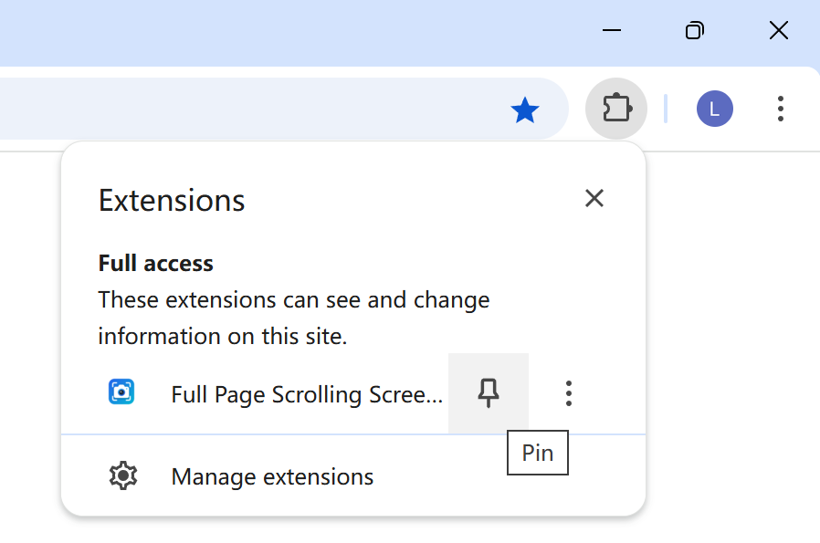

OpenCapture - Webpage & Scrolling Screenshot Suite
A 100% Free, Open Source (FOSS) and privacy-respecting browser extension to capture full webpages, annotate, crop, and export to PDF/PNG/JPEG.
Key Features (All 100% Free & Local-First)
- Full Page & Scrollable Capture: Capture entire scrollable containers and documents.
- HD 2x Capture: Crisp high-resolution screenshots without blurry artifacts.
- Ultra-Long Page Split: Automatically split enormous pages into manageable segments.
- Built-in Editor: Crop, add arrows, rectangles, freehand drawing, blur/mosaic, and text.
- Export Options: One-click copy to clipboard, save as PNG/JPEG, or multi-page PDF.
- Zero Tracking / Zero Telemetry: Everything executes locally in your browser sandbox.

OpenCapture • Released under MIT License • GitHub Repository